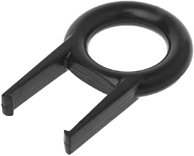
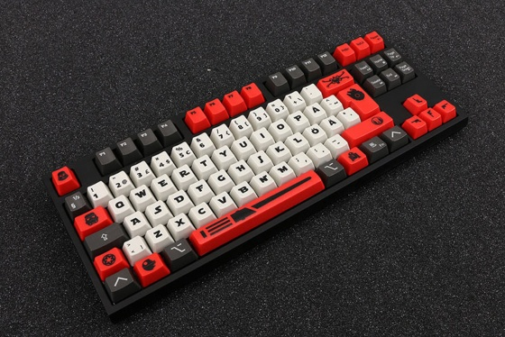

Los teclados mecánicos siguen un patrón de fabricación y construcción por lo que es muy fácil encontrar elementos de repuesto para repararlos o cambiarles la estética. Para personalizar tu teclado tan solo necesitas dos elementos:
- Un nuevo set de keycaps (teclas)
- Un extractor de teclas 
Los keycaps se pueden obtener de una forma muy sencilla a través de vendedores especializados, podemos encontrar muchas opciones disponibles en sitios como MercadoLibre/Amazon, etc. Es importante señalar que si tu teclado dispone de retroiluminación debes asegurarte de comprar unos keycaps que dejen pasar la luz correctamente, de lo contrarío la luz de tu teclado no se apreciará bien.
Retirar las teclas es muy sencillo si tenemos un extractor, solo tenemos que seguir estos pasos:
- Coloca el extractor de teclas alrededor de la tecla que deseas extraer.
- Asegúrate de que ambos lados encajen en su lugar debajo de la tecla.
- Levanta el extractor de teclas.
- Para colocar una nueva tecla, simplemente alinéala y empuja suavemente hacia abajo.
Les dejamos el siguiente tutorial para más ayuda:
Para personalizar nuestro teclado también podemos añadir amortiguadores del clack, estos no hacen más que amortiguar el impacto de la tecla al pulsarla con el dedo, con ello se reduce el ruido generado que es uno de los principales inconvenientes de los teclados mecánicos.
Con un poco de trabajo y paciencia se pueden lograr resultados sorprendentes:
